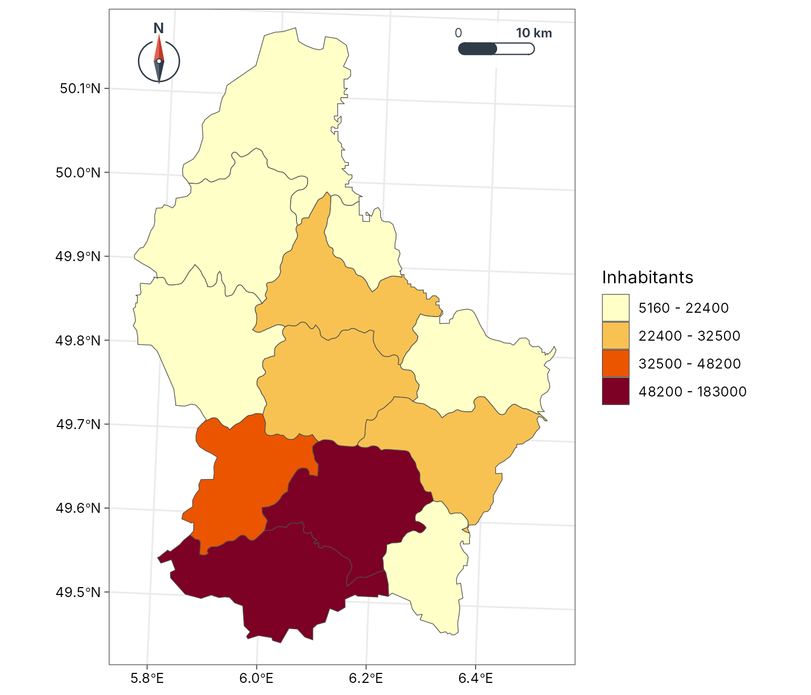
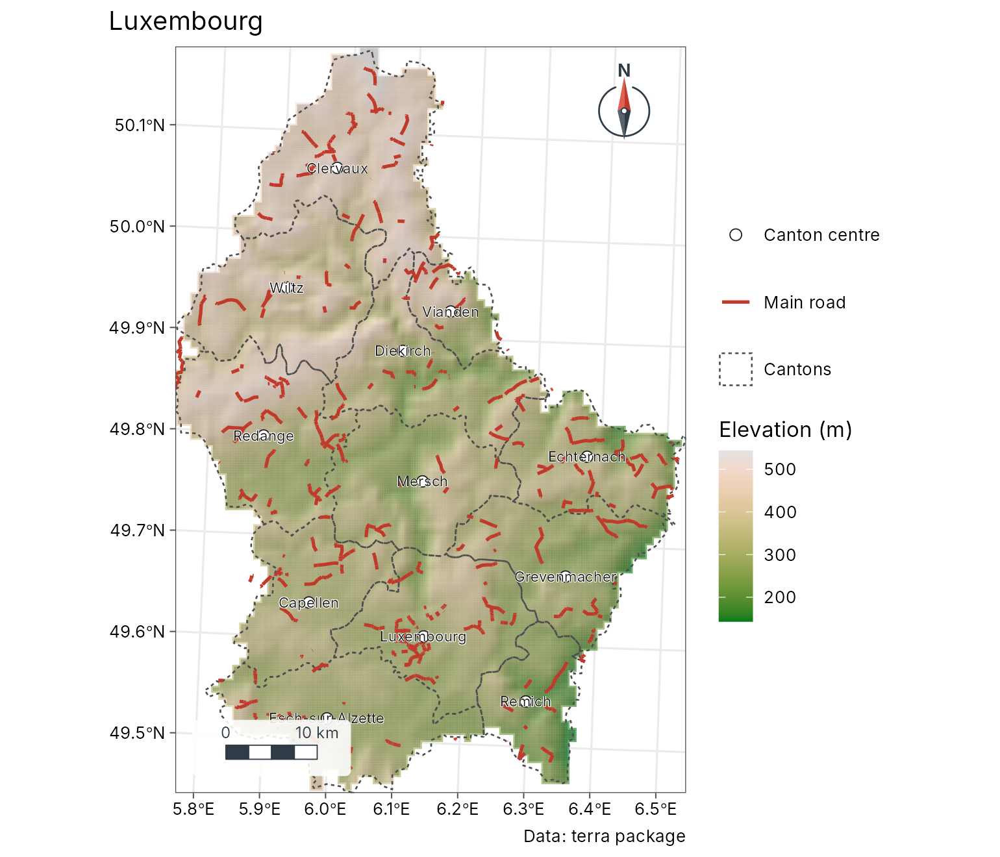
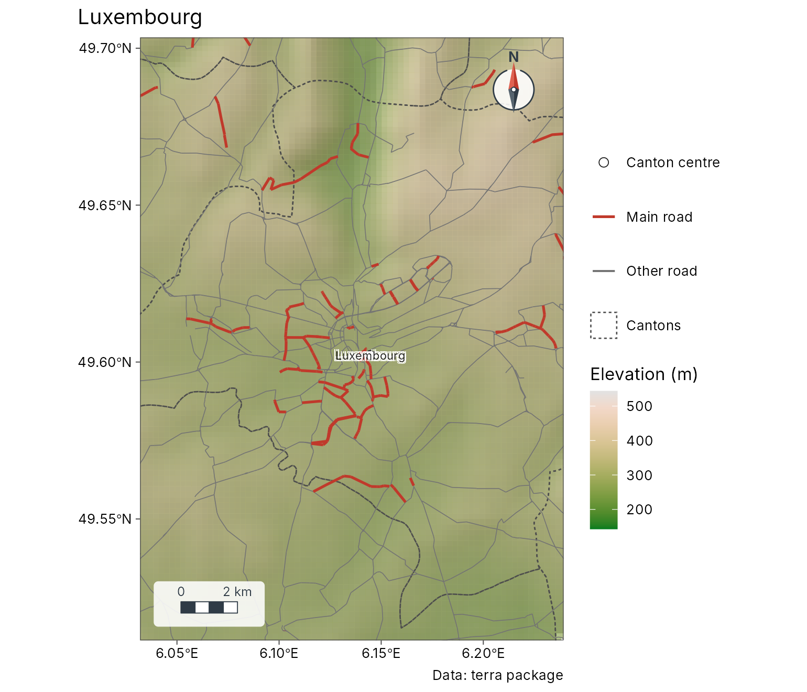
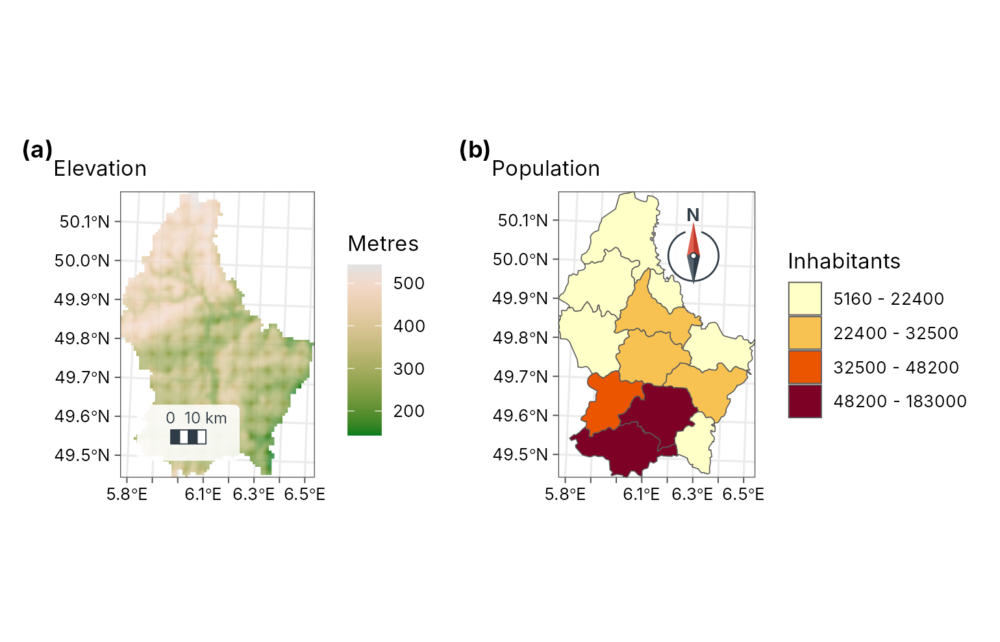
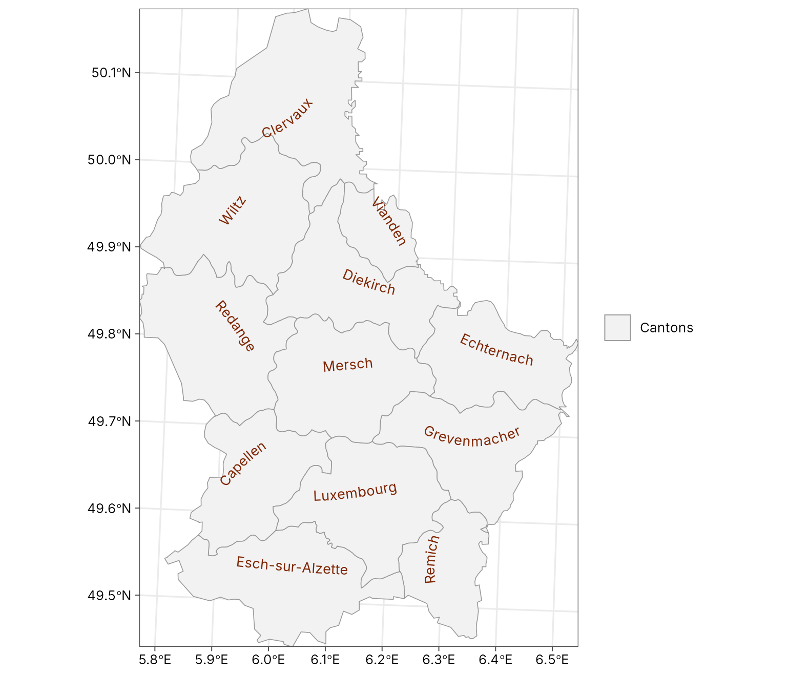
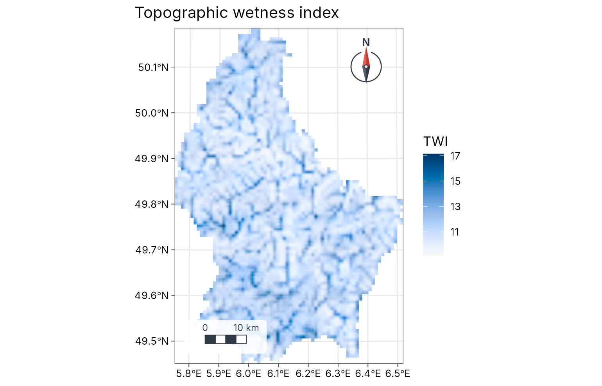
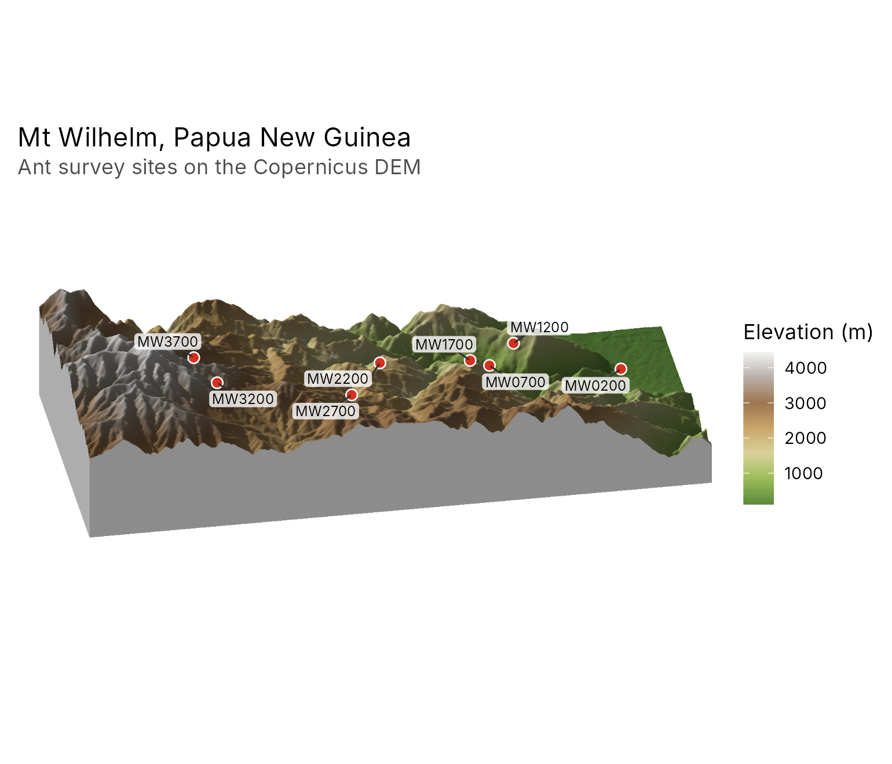

Getting started with tidymapr
tidymapr.Rmdtidymapr makes publication-quality maps and does spatial analysis in R, in the style of a desktop GIS. This guide takes one small, real data set from raw layers to a finished figure, an interactive web map and a 3D view. Everything here uses data shipped with the terra and sf packages, so it runs offline.
The data
Luxembourg’s elevation (from SRTM), its 12 cantons with their population, and its main roads, all shipped with terra.
elev <- terra::rast(system.file("ex/elev.tif", package = "terra"))
cantons <- sf::st_read(system.file("ex/lux.shp", package = "terra"), quiet = TRUE)
roads <- sf::st_as_sf(terra::unwrap(
readRDS(system.file("ex/lux_highways.rds", package = "terra"))
))
seats <- suppressWarnings(sf::st_point_on_surface(cantons))
cantons[, c("NAME_2", "AREA", "POP")]
#> Simple feature collection with 12 features and 3 fields
#> Geometry type: POLYGON
#> Dimension: XY
#> Bounding box: xmin: 5.74414 ymin: 49.44781 xmax: 6.528252 ymax: 50.18162
#> Geodetic CRS: WGS 84
#> First 10 features:
#> NAME_2 AREA POP geometry
#> 1 Clervaux 312 18081 POLYGON ((6.026519 50.17767...
#> 2 Diekirch 218 32543 POLYGON ((6.178368 49.87682...
#> 3 Redange 259 18664 POLYGON ((5.881378 49.87015...
#> 4 Vianden 76 5163 POLYGON ((6.131309 49.97256...
#> 5 Wiltz 263 16735 POLYGON ((5.977929 50.02602...
#> 6 Echternach 188 18899 POLYGON ((6.385532 49.83703...
#> 7 Remich 129 22366 POLYGON ((6.316665 49.62337...
#> 8 Grevenmacher 210 29828 POLYGON ((6.425158 49.73164...
#> 9 Capellen 185 48187 POLYGON ((5.998312 49.69992...
#> 10 Esch-sur-Alzette 251 176820 POLYGON ((6.039474 49.44826...A map in one call
geo_automap() chooses the projection, the
classification, the colour ramp, the legend and the map furniture from
the data, and geo_automap_explain() says why.
m <- geo_automap(cantons, POP, legend_title = "Inhabitants")
m
geo_automap_explain(m)
#> # A tibble: 5 x 3
#> element choice reason
#> <chr> <chr> <chr>
#> 1 projection utm Data span 1.5 degree~
#> 2 symbology graduated colours (jenks, 4 classes, YlOrRd) 'POP' is numeric and~
#> 3 basemap none Polygons, rasters an~
#> 4 scale bar pill at tr Distances matter at ~
#> 5 north arrow needle at tl Second-emptiest corn~A layered map
geo_map() builds a map one layer at a time, as in a
desktop GIS. Each layer gets its own legend section with the symbol for
its geometry: a colour bar for the raster, a box for polygons, a line
for roads and a point for towns. Roads are drawn in two classes, minor
roads first and main roads on top, so the network stays connected (in
this OpenStreetMap extract each road is split into pieces of different
classes). preset gives a layer a standard cartographic
style by name (see map_presets()).
lux <- geo_map(title = "Luxembourg", caption = "Data: terra package") |>
map_raster(elev, name = "Elevation (m)", palette = "Terrain 2", hillshade = TRUE) |>
map_polygons(cantons, preset = "admin", label = "Cantons") |>
map_lines(roads[roads$highway != "primary", ],
preset = "road_minor", label = "Other road", linewidth = 0.25
) |>
map_lines(roads[roads$highway == "primary", ], preset = "road_major") |>
map_points(seats, preset = "town", label = "Canton centre") |>
map_labels(seats, text = NAME_2, size = 2.6)
lux
Zoom in on Luxembourg City and put the legend inside the map; tidymapr picks a corner that does not hide the scale bar or the north arrow.

Figures with several maps
geo_panels() puts maps side by side with tags (a), (b);
geo_facet_map() draws small multiples that share one
classification.
a <- geo_map(subtitle = "Elevation", north_arrow = FALSE) |>
map_raster(elev, name = "Metres", palette = "Terrain 2")
b <- geo_map(subtitle = "Population", scale_bar = FALSE) |>
map_polygons(cantons, fill = POP, n = 4, group = "Inhabitants")
geo_panels(a, b, ncol = 2, guides = "keep")
Labels that follow the shape
geo_map(scale_bar = FALSE, north_arrow = FALSE) |>
map_polygons(cantons, fill = "grey95", border = "grey60", label = "Cantons") |>
map_curved_labels(cantons, text = NAME_2, size = 3.2, colour = "#7F2704")
Analysis
tidymapr includes the spatial statistics of a GIS, written in C++ and run on several cores. For example, hot spots of population density (Getis-Ord Gi*) and the terrain wetness index of the elevation model:
cantons$density <- cantons$POP / cantons$AREA
hot <- geo_hotspot(cantons, density, k = 3)
sf::st_drop_geometry(hot)[, c("NAME_2", "density", "hotspot")]
#> NAME_2 density hotspot
#> 1 Clervaux 57.95192 not significant
#> 2 Diekirch 149.27982 not significant
#> 3 Redange 72.06178 not significant
#> 4 Vianden 67.93421 not significant
#> 5 Wiltz 63.63118 not significant
#> 6 Echternach 100.52660 not significant
#> 7 Remich 173.37984 hot
#> 8 Grevenmacher 142.03810 not significant
#> 9 Capellen 260.47027 hot
#> 10 Esch-sur-Alzette 704.46215 hot
#> 11 Luxembourg 770.49367 hot
#> 12 Mersch 137.81974 not significant
twi <- geo_twi(terra::project(elev, "EPSG:2169"))
geo_map(title = "Topographic wetness index") |>
map_raster(twi, name = "TWI", palette = "Blues 3")
3D and the web
geo_map3d() renders an elevation model as a 3D block
diagram, drawn in C++ without OpenGL. Here, Mt Wilhelm in Papua New
Guinea, from the Copernicus 30 m DEM (averaged to 90 m and shipped with
tidymapr), with the ant survey sites of Mottl, Moses and Klimes (2023)
placed on the terrain.
wilhelm <- terra::rast(system.file("extdata", "wilhelm-dem.tif", package = "tidymapr"))
ant_sites <- png_ants_sites[!duplicated(png_ants_sites$site), ] |>
sf::st_as_sf(coords = c("lon", "lat"), crs = 4326)
geo_map3d(wilhelm,
theta = 190, phi = 30, points = ant_sites, label = "site",
title = "Mt Wilhelm, Papua New Guinea",
subtitle = "Ant survey sites on the Copernicus DEM",
width = 1600, height = 1000
)
and as an interactive web map in one HTML file, with switchable layers, pop-ups and the same legend:
geo_webmap(lux, file = "luxembourg.html")Save
geo_save() writes a figure at journal sizes and
resolution, on a white background:
geo_save(lux, "luxembourg.png", width = 180, height = 190, dpi = 300)Where next
- Two case studies: where the brown-throated sloth lives (species distribution models) and tree diversity across Barro Colorado Island (with tidydiversity).
- The gallery shows every kind of map with its code.
- The spatial analysis guide covers interpolation, hot spots, hydrology, remote sensing, species distribution models and GeoSpaX recipes.